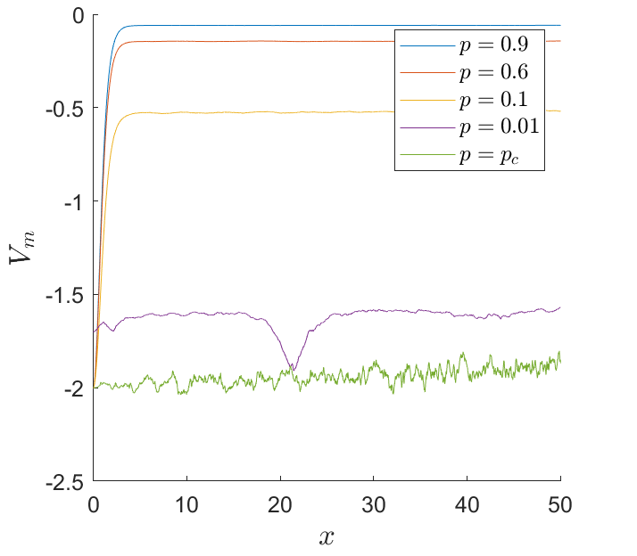

Resumo/Abstract
Um dos desafios quando se analisa redes reais, é a deteção do ponto de percolação. O objetivo deste projeto é realizar uma abordagem quântica a redes complexas. Esta abordagem é baseada na reconstrução dos potenciais da equação de Schrödinger, a partir dos valores próprios do Laplaciano normalizado. Além do estudo do ponto de percolção foi analisado a geometria destes potenciais. Este procedimento foi realizado para a rede de Erdös-Rényi, para a rede Barabási-Albert e ainda para a rede elétrica dos Estados Unidos. Os resultados para a rede de Erdös-Rényi e para a rede elétrica dos EU foram consistentes com os da Ref. [1]
Não obstante a isso, os resultados dos potenciais da rede real foram mais semelhantes ao modelo de Barabási-Albert do que de Erdös-Rényi. Ainda se estudou para estes potenciais, a Dimensão Fractal de Higuchi. Nesta secção observou-se que no ponto de percolação obtemos a dimensão máxima para a rede de Erdös-Rényi. Para a rede real os resultados foram diferentes. Contudo para a rede de Barabási-Albert os resultados foram análogos aos da rede de Erdös-Rényi. Em suma esta abordagem permite a deteção do ponto de percolação através do método proposto.
Algumas Considerações
Neste trabalho produziu-se vários códigos tais como o método de Numerov juntamente com o método de Shooting. Ainda produziu-se um código para gerar a rede de Erdös-Rényi e Barabási-Albert. Para estudar a fractalidade dos potenciais utilizou-se ainda o método de Higuchi. Para além disso para cada uma das redes determinou-se o tamanho da maior componente conectada. Para além dos modelos sintéticos estudou-se uma rede real, a rede elétrica dos Estados unidos. Uma vez que esta rede é determinística, é necessário criar aleatoriadade por isso fez-se um código que provocava dano na rede, isto é escolhia-se aleatoriamente N' pontos da rede e apenas se preservava as ligações desses nós.
Estes foram apenas alguns exemplos de códigos que produzi em C para este projeto.
De forma a cativar a leitura mostro de seguida alguns dos resultados obtidos. Na primeira figura é possivel observar os potenciais obtidos para a rede de Erdös-Rényi para probabilidades distintas antes e depois do ponto crítico. Na figura seguinte é possivel observar os potenciais para a rede elétrica dos Estados Unidos. E por fim os mesmos resultados para a rede de Barabási-Albert.
Para probabilidades menores que o ponto de percolação, na rede de ER
Para probabilidades maiores que o ponto de percolação, na rede de ER
Os potenciais para a rede de Barabási-Albert.
Os potenciais para a rede elétrica dos Estados Unidos.
Bibliografia
[1] Nicola Amoroso, Loredana Bellantuono, Saverio Pascazio, Angela Lombardi, Alfonso Monaco, Sabina Tangaro, and Roberto Bellotti. Potential energy of complex networks: a quantum mechanical perspective. Sci. Rep, 10(1):1, 2020.